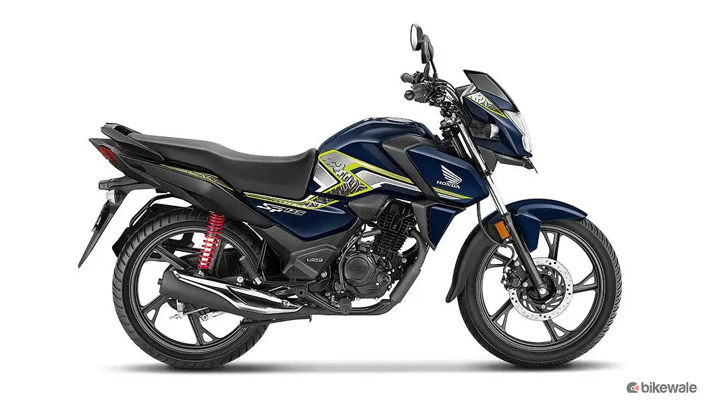

Honda SP 125 is a commuter bike available in 2 variants and 5 colours. The Honda SP 125 is powered by
123.94cc BS6 engine which develops a power of 10.72 bhp and a torque of 10.9 Nm. With both front and rear
drum brakes, Honda SP 125 comes up with combined braking system of both wheels. This SP 125 bike weighs 116
kg and has a fuel tank capacity of 11 liters.